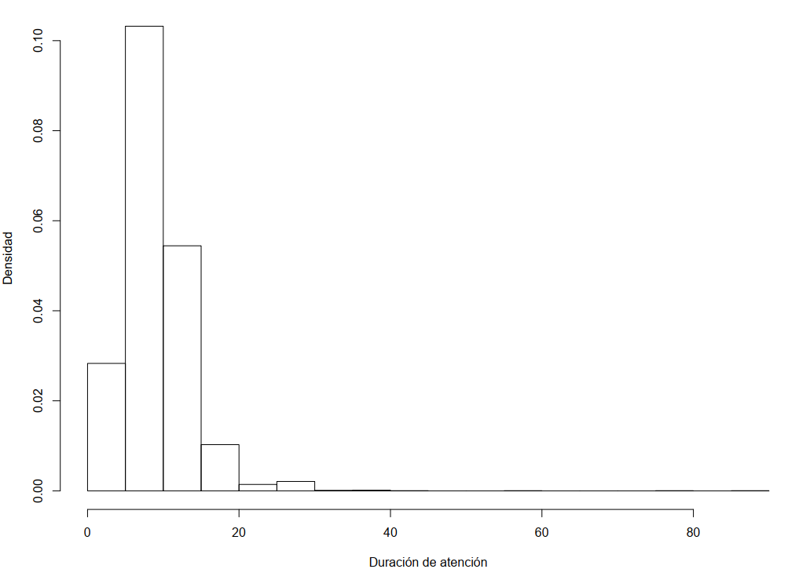
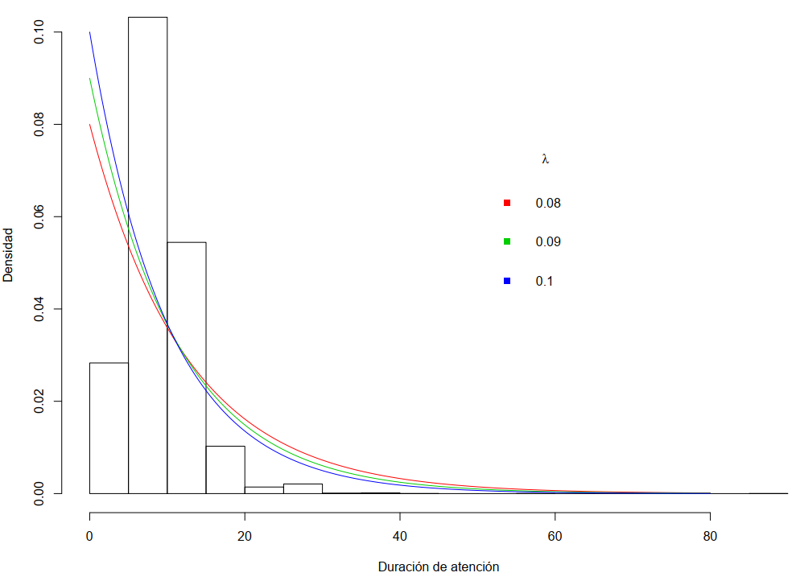
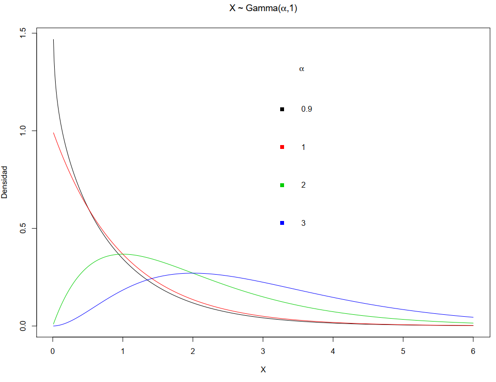
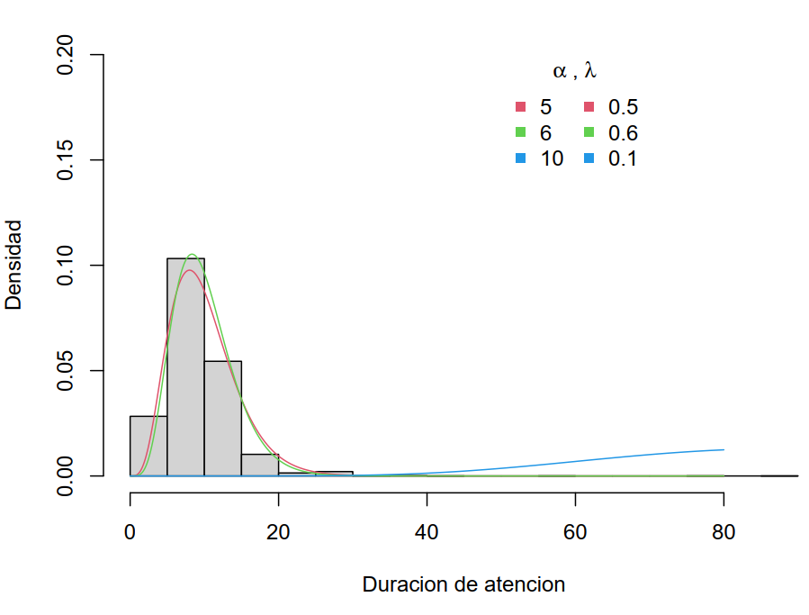

Capítulo 6 Modelos Notables para v.a. continuas
6.1 Modelo: Exponencial
6.1.1 Función de densidad f
Sea \(X\) una variable aleatoria (v.a.) continua
Decimos que \(X\) sigue un modelo exponencial y se denota por \[X \sim Exponencial(\lambda) \ , \ \lambda >0\] si su función de densidad es \[f(x) = \left \{ \begin{array}{ccc} \lambda e^{- \lambda x} & , & x>0 \\ 0 & , & x \leq 0 \end{array} \right.\] donde \(\lambda>0\) se le llama el parámetro de escala.
6.1.2 Función acumulada F
- La función de distribución acumulada es \[F(x) = \left \{ \begin{array}{ccc} 1 - e^{- \lambda x} & , & x>0 \\ 0 & , & x \leq 0 \end{array} \right.\]
6.1.3 Gráficamente
Modelo Exponencial
6.1.4 Esperanza y varianza.
- La esperanza y varianza son
\[\begin{aligned} E[X] &=& \frac{1}{\lambda} \nonumber \\ Var[X] &=& \frac{1}{\lambda^2} \nonumber\end{aligned}\]
La mediana es \[Q_2 = -\frac{1}{\lambda} \log_e{(0.5)}\]
El percentil 100p% para \(p \in (0,1)\) es \[q_p = -\frac{1}{\lambda} \log_e{(1-p)}\]
6.1.5 Nota: Otros parametros.
Otra parametrización es en función de su valor esperado \[X \sim Exponencial(\beta) \ , \ \beta >0\]
La función de densidad y de distribución acumulada son
\[\begin{aligned} f(x) &=& \frac{1}{\beta} e^{-x/\beta} \ , \ x > 0 \nonumber \\ F(x) &=& e^{-x/\beta} \ , \ x > 0 \nonumber\end{aligned}\]
y \(0\) en caso contrario.
- La esperanza y la varianza son
\[\begin{aligned} E[X] &=& \beta \nonumber \\ Var[X] &=& \beta^2 \nonumber \end{aligned}\]
6.1.6 Ejercicios:
6.1.6.1 Cálculos en R
Supongamos que \(X \sim Exponencial(\lambda=2)\):
- Calcular \(P(X\leq 1)\)
pexp(1,rate=2)## [1] 0.8646647- Calcular \(P(X > 4) = 1- P(X \leq 4)\)
1 - pexp(4,rate=2)## [1] 0.0003354626- \(P(1 \leq X \leq 10) = F(10) - F(1)\)
pexp(10,rate=2) - pexp(1,rate=2)## [1] 0.1353353- El percentil 90. Es decir \(P(X \leq q_{0.9}) = 0.9\)
qexp(0.9,rate=2)## [1] 1.1512936.1.6.2 Caso: Tiempo de atención
- Consideremos la Encuesta de satisfacción en salud (del año 2015).
- En esta encuesta se obtuvo la duración de la atención de pacientes.
- En R, podemos obtener los datos y ver sus medidas de resumen:
library(haven)
enlace="http://portal.susalud.gob.pe/wp-content/uploads/archivo/base-de-datos/2015/CUESTIONARIO%2001%20-%20CAPITULOS.sav"
salud.paciente <- read_sav(enlace)
# Datos de pacientes:
attr(salud.paciente$C1P14,"label")## [1] "¿CUÁNTO TIEMPO TRANSCURRIÓ, DESDE QUE UD. INGRESÓ HASTA QUE SALIÓ DEL CONSULTORIO MÉDICO? (En minutos)"summary(salud.paciente$C1P14)## Min. 1st Qu. Median Mean 3rd Qu. Max. NA's
## 1.00 10.00 10.00 11.13 15.00 90.00 28# Varianza y desviación estandard
mean(salud.paciente$C1P14,na.rm = T)## [1] 11.13173var(salud.paciente$C1P14,na.rm = T)## [1] 21.91953sd(salud.paciente$C1P14,na.rm = T)## [1] 4.68183- La media y desviación éstandar de la duración de la atención son 11.13 y 4.7 minutos, respectivamente.

Sea \(X\) la duración de la atención en minutos
Supongamos que \(X\) se modela via \[X \sim Exponencial(\lambda)\]
Comparación:
A partir de los datos:
| \(\bar{X}\) | \(S_X^2\) | \(Q_2\) |
|---|---|---|
| 11.13 | 21.9 | 10 |
- A partir de modelos exponenciales:
| \(\lambda\) | \(E[X]\) | \(Var[X]\) | \(Q_2\) |
|---|---|---|---|
| 0.08 | 12.5 | 156.25 | 8.66 |
| 0.09 | 11.1 | 123.46 | 7.70 |
| 0.1 | 10 | 100 | 6.93 |
- Note que todos los modelos (usados) esperan más variabilidad que la observada.

6.2 Modelo: Gamma
6.2.1 Función de densidad f
Decimos que una variable continua \(X\) es Gamma y se denota por \[X \sim Gamma(\alpha,\lambda) \ , \ \alpha > 0 \ , \ \lambda >0\]
Su función de densidad es
\[ f(x) = \left \{ \begin{array}{ccc} \frac{\lambda^\alpha}{\Gamma(\alpha)} x^{\alpha - 1}e^{- \lambda x} & , & x>0 \\ 0 & , & x \leq 0 \end{array} \right. \]
donde
\((\alpha,\lambda)\): Son los parametros de forma y escala, respectivamente.
\(\Gamma(\cdot)\): Es la función Gamma
La función gamma esta definida por \[\Gamma(x) = \int_0^{\infty} u^{x-1} e^{-u} du\]
Si \(x \in Z^{+}\) \[\Gamma(x) = (x-1)!\]
6.2.2 Graficamente
{width=500px}
6.2.3 Esperanza y varianza
- La esperanza y varianza son
\[\begin{aligned} E[X] &=& \frac{\alpha}{\lambda} \nonumber \\ Var[X] &=& \frac{\alpha}{\lambda^2} \nonumber \end{aligned}\]
- Si \(X_1,\dots,X_n\) son independientes y \[X_i \sim Exponencial(\lambda) \ , \ i=1,\dots,n\] entonces \[Y = X_1 + \dots + X_n \sim Gamma(n,\lambda)\]
6.2.4 Ejercicios
6.2.4.1 Cálculos en R
Supongamos que \(X \sim Gamma(\alpha=2,\lambda=2)\)
- Cálculo de \(P(X\leq 1)\)
pgamma(1,2,2)## [1] 0.5939942- Cálculo de \(P(X > 4) = 1- P(X \leq 4)\)
1 - pgamma(4,2,2)## [1] 0.003019164- Cálculo de \(P(1 \leq X \leq 10) = F(10) - F(1)\)
pgamma(10,2,2) - pgamma(1,2,2)## [1] 0.4060058- El tercer cuartil \(Q_3\)
qgamma(0.75,2,2)## [1] 1.3463176.2.4.2 Caso: Duración de la atención
Sea \(X\) la duración de la atención en minutos
Supongamos que \(X\) se modela via \[X \sim Gamma(\alpha,\lambda)\]
Comparación
A partir de los datos:
| \(\bar{X}\) | \(S_X^2\) | \(Q_2\) |
|---|---|---|
| 11.13 | 21.9 | 10 |
- A partir de modelos gamma:
| \(\alpha\) | \(\lambda\) | \(E[X]\) | \(Var[X]\) |
|---|---|---|---|
| 5 | 0.5 | 10 | 20 |
| 6 | 0.6 | 10 | 16.67 |
| 10 | 0.1 | 10 | 1000 |
Graficando los datos y los modelos candidatos:

6.3 Modelo: Weibull
6.3.1 Función de densidad f
Decimos que una variable continua \(X\) es Gamma y se denota por \[X \sim Weibull(\alpha,\beta) \ , \ \alpha > 0 \ , \ \beta >0\]
Su función de densidad es \[f(x) = \left \{ \begin{array}{ccc} \frac{\alpha}{\beta} \left ( \frac{x}{\beta} \right )^{\alpha-1} e^{- \left( \frac{x}{\beta} \right)^{\alpha}} & , & x > 0 \\ 0 & , & x \leq 0 \end{array} \right.\] donde \((\alpha,\beta)\) son los parametros de forma y escala, respectivamente.
6.3.2 Función acumulada F
La función de distribución acumulada es \[F(x) = \left \{ \begin{array}{ccc} 1 - e^{- \left( \frac{x}{\beta} \right)^{\alpha}} & , & x > 0 \\ 0 & , & x \leq 0 \end{array} \right.\]
La esperanza y varianza son
\[\begin{aligned} E[X] &=& \beta \Gamma \left ( 1+ \frac{1}{\alpha} \right ) \nonumber \\ Var[X] &=& \beta^2 \left [ \Gamma \left ( 1+ \frac{2}{\alpha} \right ) - \left ( \Gamma \left ( 1+ \frac{1}{\alpha} \right ) \right )^2 \right ] \nonumber \end{aligned}\]

6.3.3 Ejercicios
6.3.4 Calculos en R
Supongamos que \(X \sim Weibull(\alpha=2,\beta=2)\)
\(P(X\leq 1)\)
pweibull(1,2,2)## [1] 0.2211992# 0.2211992- \(P(X > 4) = 1- P(X \leq 4)\)
1 - pweibull(4,2,2)## [1] 0.01831564- \(P(1 \leq X \leq 10) = F(10) - F(2)\)
pweibull(10,2,2) - pweibull(1,2,2)## [1] 0.7788008- El primer quartil \(Q_1\)
qweibull(0.25,2,2)## [1] 1.072726.3.4.1 Caso: Duración de atención
Sea \(X\) la duración de la atención en minutos
Supongamos que \(X\) se modela via \[X \sim Weibull(\alpha,\beta)\]
Comparación
A partir de los datos:
| \(\bar{X}\) | \(S_X^2\) | \(Q_2\) |
|---|---|---|
| 11.13 | 21.9 | 10 |
- A partir de modelos weibull con diferentes \(\alpha\) y \(\beta\):
| \(\alpha\) | \(\beta\) | \(E[X]\) | \(Var[X]\) |
|---|---|---|---|
| 2 | 10 | 8.86 | 21.46 |
| 3 | 10 | 8.92 | 10.53 |
| 4 | 10 | 9.06 | 6.47 |
6.3.4.2 Duración de atención
En R, se puede obtener la mediana, media y varianza para el modelo.
Medianas:
qweibull(0.5,2,10)## [1] 8.325546qweibull(0.5,3,10)## [1] 8.84997qweibull(0.5,4,10)## [1] 9.124443- Cálculo de la media:
fun210 = function(x) x*dweibull(x,2,10)
fun310 = function(x) x*dweibull(x,3,10)
fun410 = function(x) x*dweibull(x,4,10)
funx2_210 = function(x) x^2*dweibull(x,2,10)
funx2_310 = function(x) x^2*dweibull(x,3,10)
funx2_410 = function(x) x^2*dweibull(x,4,10)
E210 = integrate(fun210,0,Inf)
E210## 8.862269 with absolute error < 0.00013E310 = integrate(fun310,0,Inf)
E310## 8.929795 with absolute error < 8e-06E410 = integrate(fun410,0,Inf)
E410## 9.064025 with absolute error < 5.5e-05- También, es posible calcular la varianza:
Var210 = integrate(funx2_210,0,Inf)$value - E210$value^2
Var210## [1] 21.46018Graficando